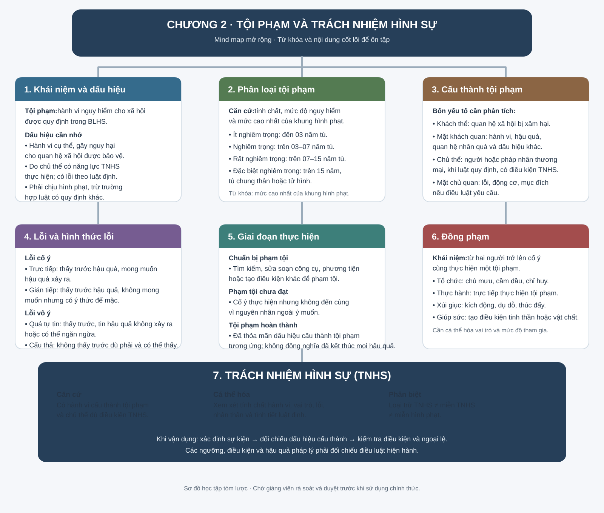

Mind map Chương 2: Tội phạm và trách nhiệm hình sự
Sơ đồ hệ thống hóa khái niệm, dấu hiệu và phân loại tội phạm; cấu thành tội phạm; lỗi; các giai đoạn thực hiện tội phạm; đồng phạm và trách nhiệm hình sự.
Mở mind map ở kích thước đầy đủ ↗
Lưu ý: Sơ đồ dùng để ôn tập khái quát; khi giải quyết câu hỏi cần đối chiếu điều luật hiện hành và phạm vi đề cương đã học.